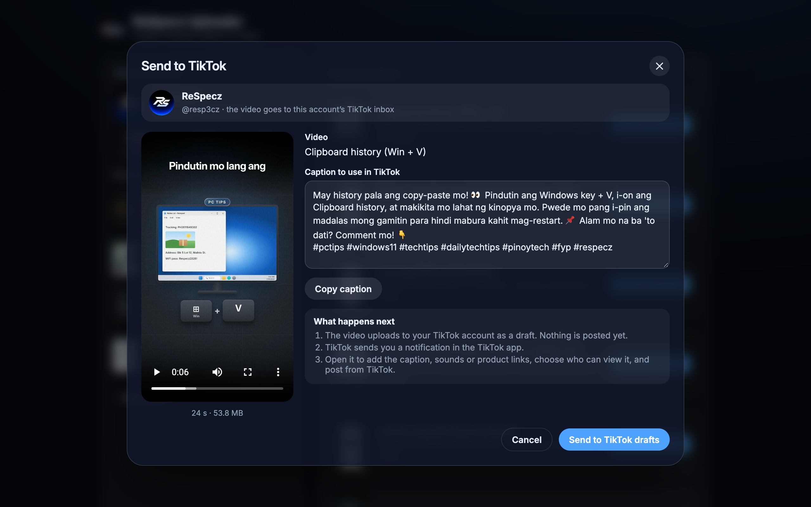
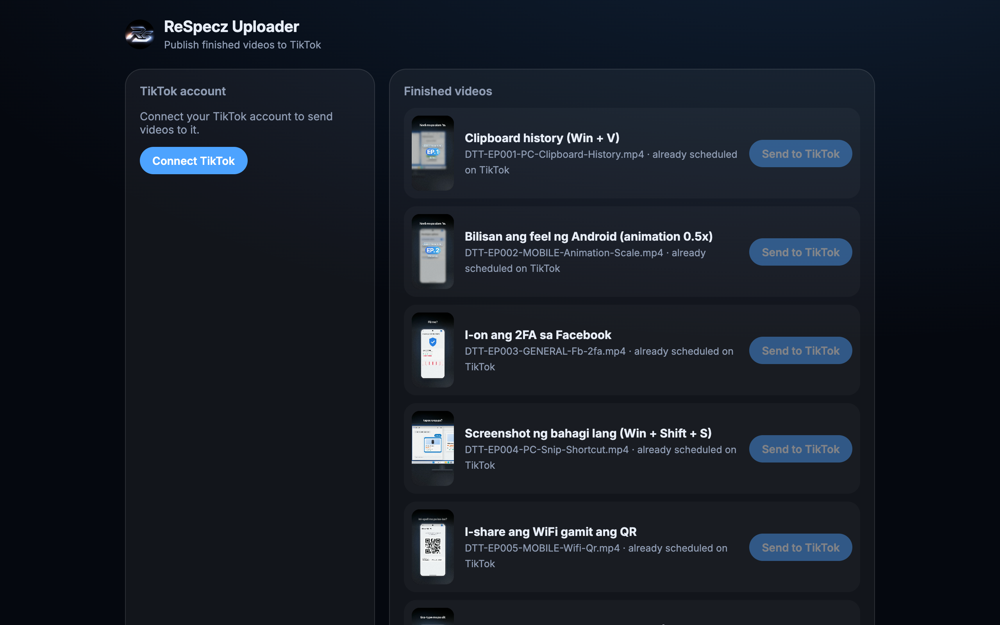

Send finished videos to TikTok, straight from your desktop.
ReSpecz Uploader is the macOS desktop app the ReSpecz creator uses to get finished videos onto TikTok. Connect your TikTok account, pick a video, and press Send. The app uploads it to your TikTok inbox as a draft with the official TikTok Content Posting API, and you finish and post it in the TikTok app.
About the desktop appHow it works
What you can do
Sign in with TikTok
Connect your account with TikTok Login Kit. The app shows your name and avatar so you always know which account the video goes to.
Send to your TikTok drafts
The video lands in your TikTok inbox. Nothing is posted until you open it in TikTok and post it yourself.
Caption ready to paste
The app shows the caption you wrote for the video, with a Copy button, so you can paste it in TikTok.
Large videos
Long explainers upload in parts, with progress shown, until TikTok confirms the draft is in your inbox.
See how your videos do
Your follower, like and video counts, and the views of your recent videos, in a private window on your own computer.
How it works
- Start ReSpecz Uploader on your Mac and click Connect TikTok. Sign in on TikTok and approve the permissions.
- Pick a finished video and click Send to TikTok.
- Check the preview and copy the caption.
- Press Send to TikTok drafts. The app uploads the video and shows TikTok's status until it reaches your inbox.
- Open the TikTok app, tap the notification, add the caption and any sounds or product links, choose who can view it, and post.

Your data
The app runs on your own computer. Your TikTok login tokens and videos stay there and are sent only to TikTok. There is no ReSpecz server. Read the Privacy Policy and Terms of Service.